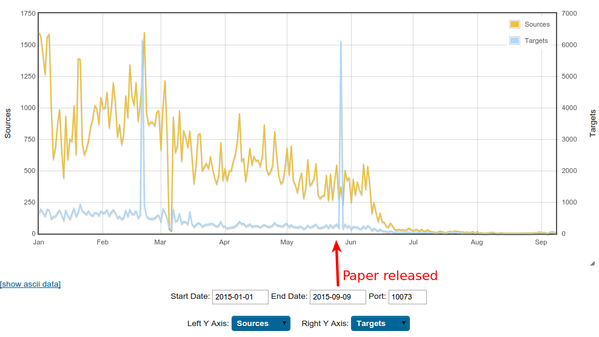

$ strings moose_mips.elf
[...]
cat /proc/cpuinfo
GET /xx/rnde.php?p=%d&f=%d&m=%d HTTP/1.1
Host: www.getcool.com
Connection: Keep-Alive
127.0.0.1
[...]A Moose Once Bit My Honeypot
A Story of an Embedded Linux Botnet
by Olivier Bilodeau (@obilodeau)
$ apropos
Embedded Linux Malware
Moose DNA (description)
Moose Herding (the Operation)
What’s New?
Take Aways
$ whoami
Malware Researcher at ESET
Infosec lecturer at ETS University in Montreal
Previously
infosec developer, network admin, linux system admin
Co-founder Montrehack (hands-on security workshops)
Founder NorthSec Hacker Jeopardy
Embedded Linux Malware
What marketing likes to call "Internet of Things Malware"
Malware Running On An Embedded Linux System
Like
consumer routers
DVR
Smart TVs
IP Camera monitoring systems
…
Caracteristics of Embedded Linux Systems
Small amount of memory
Small amount of flash
Non x86 architectures: ARM, MIPS
Wide-variety of libc implementations / versions
Same ABI-compatible Linux kernel (2.4 < x < 4.3)
Support ELF binaries
Rarely an integrated UI
Networked
Why Threats On These Systems Matters?
Hard to detect
Hard to remediate
Hard to fix
Low hanging fruit for bad guys
It’s Real
Several cases disclosed in the last two years
A lot of same-old background noise (DDoSer)
Things are only getting worse
Wait, is IoT malware really about things?
No. Not yet.
So what kind of malware can we find on such insecure devices?
Linux/Aidra
Linux/Bassobo
ChinaZ family (XOR.DDoS, …)
Linux/Dofloo
Linux/DNSAmp (Mr Black, BillGates)
Linux/Gafgyt (LizardStresser)
Linux/Hydra
Linux/Tsunami
…
Lesson Learned #0
Statically-linked stripped binaries
Static/stripped ELF primer
No imports (library calls) present
All the code bundled together down to kernel syscall
Disassembler (if available for arch) doesn’t help much
Linux/Moose binary in IDA
printf family

Ecosystem makes it worst [for reversers]
GCC and GNU libc are always changing so compiled binaries always change
Little IDA FLIRT signatures available (if any)
Various C libraries: µClibc, eglibc, glibc, musl, …
A Failed Attempt
Map syscalls with IDA script
But libc is too big
Still too much code to RE
Provided tool: https://github.com/eset/malware-research/blob/master/moose/ida/mips_identify_syscalls.py
Better Solution
Reproduce environment (arch, libc/compiler versions)
Build libraries w/ symbols under same conditions
Use bindiff to map library functions
Focus on malware code
Lesson #0
Going down to syscalls is too long in large binaries
Find a close match of C library
Build with symbols
Bindiff it (or maybe FLIRT it)
Lesson Learned #1
Be careful of strings and AV variant names
Anti-Virus Variants
and Strings
Lesson #1
Be careful with detection names
Don’t request domain take down based on output of
stringsand don’t do so for other people’s research!
Misleading Strings

Moose DNA
aka Malware description
Hang tight, this is a recap
Linux/Moose
Discovered in November 2014
Thoroughly analyzed in early 2015
Published a report in late May 2015
Linux/Moose…
Named after the string "elan" present in the malware executable

Elan is French for

The Lotus Elan
Elán
The Slovak rock band (from 1969 and still active)
Sample
Statically linked stripped ELF binary
ARM (GNU EABI and EABI 5)
MIPS (little and big endian)
No x86 sample found
C&C IP in integer form buried in all this code
MIPS/ARM + statically linked + stripped + no x86
Strings not obfuscated
Network capabilities
Pivot through firewalls
Home-made NAT traversal
Custom-made Proxy service
only available to a set of authorized IP addresses
Remotely configured generic network sniffer
DNS Hijacking
Lesson Learned #2
Don’t assume it’s custom when it can be a standard protocol
Proxy with access from C&C authorized IPs only
C&C IP is hardcoded
No fallback domains or DGA
Attack Vector
Telnet credentials bruteforce
Wordlist of 304 user/pass entries sent by server
Compromise Protocol

Can perform cross-arch infections
No further spreading if C&C is down
Missing: Persistence
Literally kills competition
Lesson Learned #3
Less RE, more honeypot!
Stuck
Solution
Launch the binary in a debian MIPS qemu image
Reachable from the Internet
Watch it behave
Firewall it
Hints
Aurel images: https://people.debian.org/~aurel32/qemu/mips/
Qemu command:
qemu-system-mips -M malta \ -no-reboot -nographic \ -kernel vmlinux-3.2.0-4-4kc-malta \ -hda debian_wheezy_mips_standard.qcow2 \ -append "root=/dev/sda1 console=ttyS0" \ -redir tcp:10073::10073 -redir tcp:22::22 -redir tcp:23::23
Lesson #3
We were too careful
Everything we learned operationally was because of infected host
Hard to track malware
Moose Herding
The Malware Operation
Via C&C Configuration
Network sniffer was used to steal HTTP Cookies
Twitter:
twll,twidFacebook:
c_userInstagram:
ds_user_idGoogle:
SAPISID,APISIDGoogle Play / Android:
LAY_ACTIVE_ACCOUNTYoutube:
LOGIN_INFO
Via Proxy Usage Analysis
Nature of traffic
Protocol
Targeted social networks
75%+ HTTPS but…
An Example

An Example (cont.)

An Example (cont.)

An Example (cont.)

Except Instagram first hit
Latest Developments
Whitepaper Impact
Few weeks after the publication the C&C servers went dark
After a reboot, all affected devices should be cleaned
But victims compromised via weak credentials, so they can always reinfect
Alive or dead?

Alive or dead? (cont.)
On the lookout for Moose v2
Looked at over 150 new samples targeting embedded Linux platforms
Found Update
New proxy service port (20012)
C&C selection on CLI
C&C server returns 404 on unknown bots
Still under analysis
Still trying to get infected
Reading research papers and adapting
Take Aways
Research artifacts released
Python and Shell Scripts
Protocol dissectors, fake servers, tshark wrappers
Yara rules
Embedded malware
Not yet complex
Tools and processes need to catch up
a low hanging fruit
Prevention simple
Questions?
Questions?
Thank you!
and special thanks to Thomas Dupuy (@nyx__o)